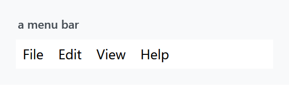
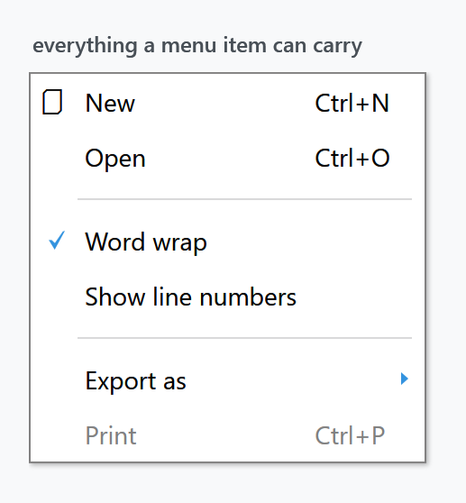
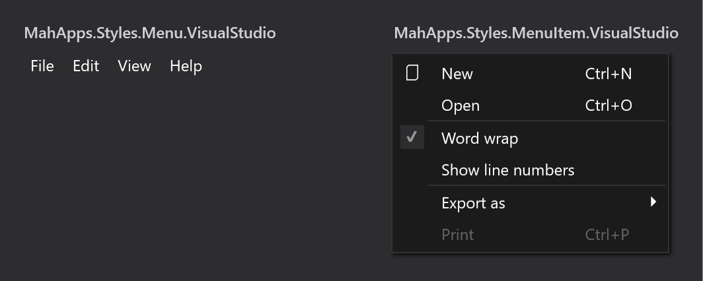

Three styles, all applied implicitly by Styles/Controls.xaml: MahApps.Styles.Menu for the bar, MahApps.Styles.ContextMenu for the popup, and MahApps.Styles.MenuItem for what goes in either. The quick start is the whole setup.

<Menu>
<MenuItem Header="_File" />
<MenuItem Header="_Edit" />
<MenuItem Header="_View" />
<MenuItem Header="_Help" />
</Menu>
Menu items
MahApps.Styles.MenuItem picks a template per Role — top-level header, top-level item, submenu header, submenu item — and each of those handles the icon, the check mark, the gesture text and the submenu arrow:

<ContextMenu>
<MenuItem Header="New" InputGestureText="Ctrl+N">
<MenuItem.Icon>
<TextBlock FontFamily="{DynamicResource MahApps.Fonts.Family.SymbolTheme}" Text="" />
</MenuItem.Icon>
</MenuItem>
<MenuItem Header="Open" InputGestureText="Ctrl+O" />
<Separator />
<MenuItem Header="Word wrap" IsCheckable="True" IsChecked="True" />
<MenuItem Header="Show line numbers" IsCheckable="True" />
<Separator />
<MenuItem Header="Export as">
<MenuItem Header="PDF" />
<MenuItem Header="HTML" />
</MenuItem>
<MenuItem Header="Print" InputGestureText="Ctrl+P" IsEnabled="False" />
</ContextMenu>
Everything in that figure comes out of the box — none of it needs a style of its own. The columns line up because the ContextMenu style sets Grid.IsSharedSizeScope="True", so the icon, text and gesture columns are measured across all the items at once. InputGestureText is only a label: it does not create the shortcut, your KeyBinding or RoutedCommand does.
Padding differs by role — 7 5 8 6 for the two top-level ones, 2 6 2 6 in a submenu — which is why a bar item is wider than tall and a popup item the other way round.
The separator is styled through {x:Static MenuItem.SeparatorStyleKey} and is a two-pixel groove inset 20 units from the left, so it starts past the icon column rather than cutting across it.
The popup
MahApps.Styles.ContextMenu sets HasDropShadow="True" and its template applies MahApps.DropShadowEffect.Menu, offsetting the border by 0 0 6 6 to leave room for it. It also sets OverridesDefaultStyle="True", so it does not inherit anything from WPF's own context menu style.
| Property | Set to |
|---|---|
Background |
MahApps.Brushes.ContextMenu.Background |
BorderBrush |
MahApps.Brushes.ContextMenu.Border |
FontSize |
MahApps.Font.Size.ContextMenu, 14 |
HasDropShadow |
True |
Grid.IsSharedSizeScope |
True |
VerticalContentAlignment |
Center |
System keys
Both styles reach for system resources rather than theme ones:
<Setter Property="Foreground" Value="{DynamicResource {x:Static SystemColors.MenuTextBrushKey}}" />
<Setter Property="FontFamily" Value="{DynamicResource {x:Static SystemFonts.MenuFontFamilyKey}}" />
The colour still follows the theme, because MahApps redefines that system key in the theme dictionary — SystemColors.MenuTextBrushKey is given MahApps.Colors.ThemeForeground there. Change the base theme and menu text changes with it.
The fonts are a different matter. MahApps does not redefine the SystemFonts.Menu* keys, so the family, style and weight of menu text come from the reader's Windows settings, not from Fonts.xaml. Menus are the one place in a MahApps window where that is true, and it is deliberate — menus are a shell affordance. Only the size is the library's, from MahApps.Font.Size.Menu and .ContextMenu.
The text box context menu
Controls.ContextMenu.xaml also holds a ready-made menu:
<ContextMenu x:Key="MahApps.TextBox.ContextMenu" x:Shared="False">
<MenuItem Command="ApplicationCommands.Cut" />
<MenuItem Command="ApplicationCommands.Copy" />
<MenuItem Command="ApplicationCommands.Paste" />
</ContextMenu>
The styles for TextBox, PasswordBox, DatePicker, DateTimePicker and HotKeyBox all point their ContextMenu at it. x:Shared="False" gives each control its own instance, which a context menu needs.
Redefining that key in App.xaml — after the MahApps dictionaries — swaps the context menu of every one of those controls at once, which is easier than setting ContextMenu on each.
Spell checking
TextBoxHelper.IsSpellCheckContextMenuEnabled turns on the spell-check entries for a TextBox or RichTextBox, and MahApps styles them through four ComponentResourceKeys on mah:Spelling: SuggestionMenuItemStyleKey (bold, header bound to the suggestion), IgnoreAllMenuItemStyleKey, NoSuggestionsMenuItemStyleKey and SeparatorStyleKey.
<TextBox SpellCheck.IsEnabled="True"
mah:TextBoxHelper.IsSpellCheckContextMenuEnabled="True" />
See TextBoxHelper.
Visual Studio variants

Styles/VS/ holds MahApps.Styles.Menu.VisualStudio, MahApps.Styles.MenuItem.VisualStudio and MahApps.Styles.ContextMenu.VisualStudio, plus its own MenuItem.SeparatorStyleKey and its own MahApps.TextBox.ContextMenu.
These are not merged by Controls.xaml. Add Styles/VS/Controls.xaml and Styles/VS/Colors.xaml first, and note that they are drawn for the dark Visual Studio shell — which is why the figure sits on a dark ground.
MahApps.Styles.Menu.VisualStudio is only two setters, a background and a foreground, with no Template and no BasedOn. Applying it therefore replaces the MahApps menu template with WPF's default rather than restyling it. If you want the MahApps bar in Visual Studio colours, base your own style on MahApps.Styles.Menu and set the background yourself.
Items from a CompositeCollection
To share part of a menu, declare it as a CompositeCollection resource and pull it in through ItemsSource:
<CompositeCollection x:Key="ContextMenuBase" x:Shared="False">
<MenuItem Command="ApplicationCommands.New" />
<MenuItem Command="ApplicationCommands.Delete" />
<Separator />
</CompositeCollection>
<ContextMenu>
<ContextMenu.ItemsSource>
<CompositeCollection>
<CollectionContainer Collection="{StaticResource ContextMenuBase}" />
<MenuItem Command="ApplicationCommands.Print" />
</CompositeCollection>
</ContextMenu.ItemsSource>
</ContextMenu>
That works, but floods the output window:
System.Windows.Data Error: 4 : Cannot find source for binding with reference 'RelativeSource FindAncestor, AncestorType='System.Windows.Controls.ItemsControl', AncestorLevel='1''. BindingExpression:Path=VerticalContentAlignment; DataItem=null; target element is 'MenuItem' (Name=''); target property is 'VerticalContentAlignment' (type 'VerticalAlignment')
The two bindings it is complaining about are in MahApps.Styles.MenuItem itself:
<Setter Property="HorizontalContentAlignment" Value="{Binding HorizontalContentAlignment, RelativeSource={RelativeSource AncestorType={x:Type ItemsControl}}}" />
<Setter Property="VerticalContentAlignment" Value="{Binding VerticalContentAlignment, RelativeSource={RelativeSource AncestorType={x:Type ItemsControl}}}" />
They are what lets a ContextMenu set the alignment for all of its items — the same pattern WPF's own item styles use. A MenuItem declared inside a CompositeCollection resource, though, is built before it belongs to anything, so the ancestor lookup finds no ItemsControl and logs. The menu itself is fine; only the log is noisy.
Replacing the two bindings with fixed values silences it:
<Style BasedOn="{StaticResource {x:Type MenuItem}}" TargetType="{x:Type MenuItem}">
<Setter Property="HorizontalContentAlignment" Value="Left" />
<Setter Property="VerticalContentAlignment" Value="Center" />
</Style>
The cost is the feature those bindings provided: alignment set on a ContextMenu no longer reaches its items.